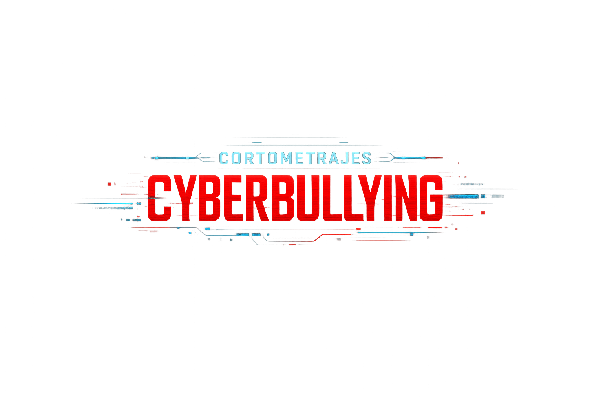

Si lo ves, actúa… No te calles.
Duración: 3:18 minutos
Este cortometraje es un relato crudo y realista sobre el ciberacoso. Explora las historias de víctimas reales y su lucha contra el silencio digital.